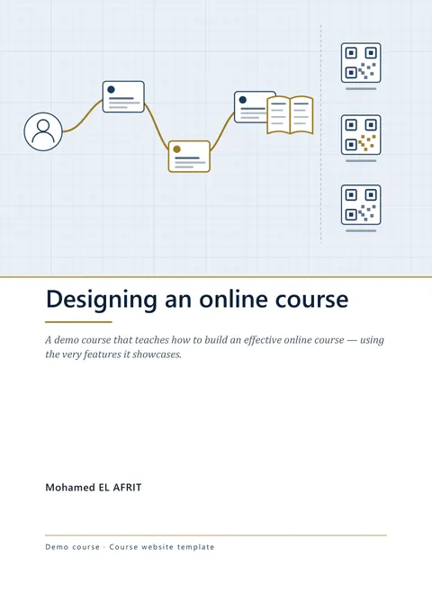

The course book
The whole course in a single book, to read offline, pencil in hand. The website picks up where paper leaves off: in the margin, QR codes take you back to the right spot to listen, experiment, and check your answers.
A book drawn from the site's pages
outils/generer_polycopie.py reads the site's chapters and builds the Word book, then Word exports the PDF; outils/publier_polycopie.py publishes it here, with its cover. What belongs to the course (the author's introduction, the cover footer) lives in outils/livret.py. The QR codes of the demo book carry an example address: a course that is online puts its own there.
1. The book

Designing an online course
A demo course that teaches how to build an effective online course, using the very features it showcases.
Mohamed EL AFRIT · Demo course · Course website template · First edition
PDF · 23 pages · 0.9 MB · in English
2. What it contains
The book follows the online course in its order, with the same titles and the same sections as the site: you move from one to the other without searching.
- The chapters, each opening with its contents: the text, the diagrams explained element by element, the activities turned into paper exercises, “Key points”.
- The glossary: the course vocabulary, with its French equivalents.
- The index, to find a notion again: in bold, the page where the margin defines it.
3. The book and the site
The wide outer margin of each page holds your notes and QR codes: point your phone’s camera at one, and it opens, at the right spot, the online resource that extends the paragraph next to it. In the PDF, on screen, click the QR code or its caption: both lead to the same place.
No answers are printed
Work on paper first, then scan the activity’s QR code: every answer is explained there, the correct one and the others alike.
4. Printing it
You can also read the book on screen: the PDF bookmarks lead straight to each chapter and each section. To print it: A4, actual size (100%), double-sided; the margins are mirrored, the wide margin always on the outside. Black and white is enough: each box can be recognized by its icon, its label, and its border.
5. The author
This text introduces the author of the course: their background, what they teach, and what led them to write this course. In a course created from the template, the author writes and approves it in outils/livret.py; the course book then prints it word for word.